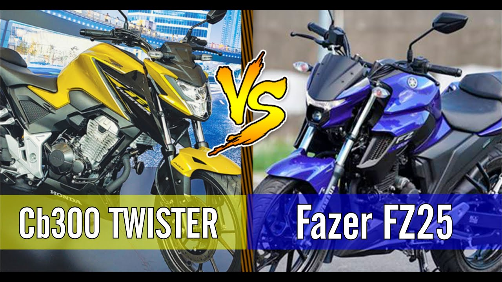
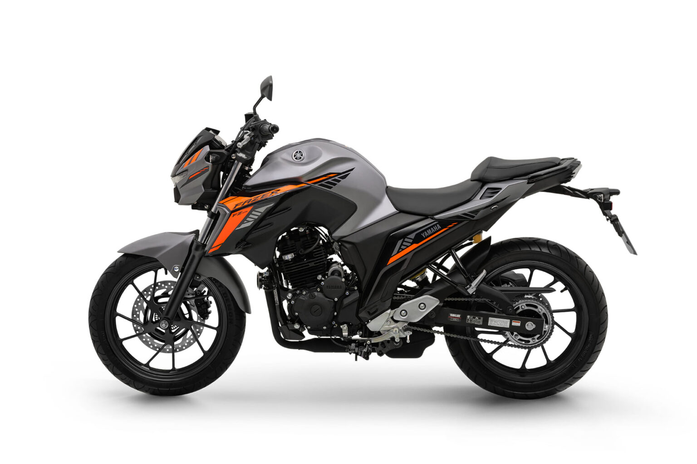
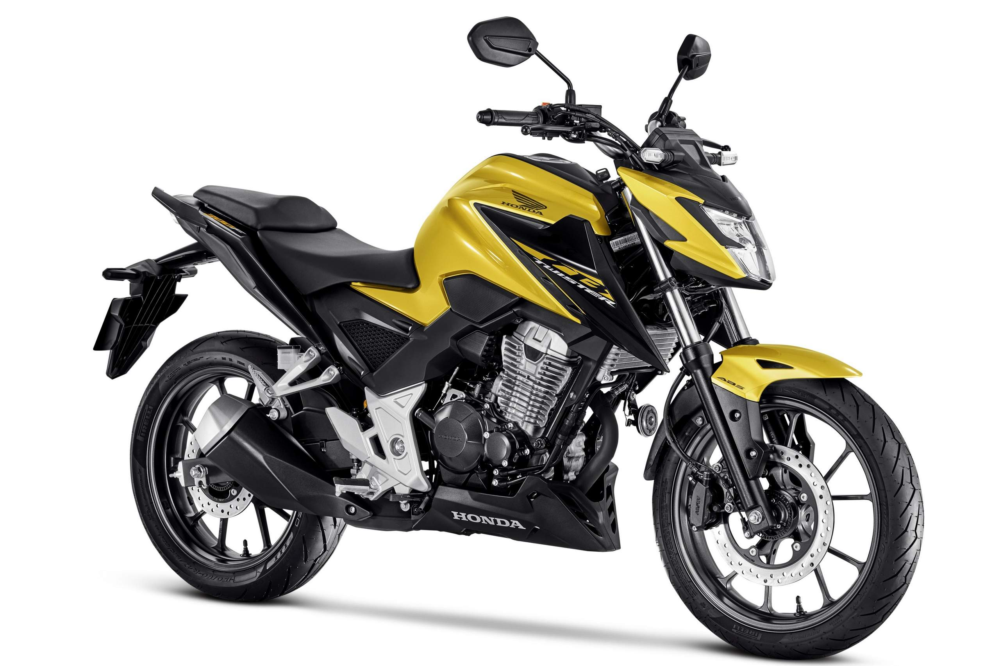

Yamaha Fazer 250 ou Honda CB 300F Twister: qual moto escolher?

Comparação entre Fazer 250 e CB 300F Twister
Muitos motociclistas ficam em dúvida entre Yamaha Fazer 250 ou Honda CB 300F Twister. As duas motos são muito populares no Brasil e pertencem ao segmento de média cilindrada de entrada.
Ambas oferecem bom desempenho, conforto e tecnologia para o uso diário e também para pequenas viagens. Por isso, escolher entre elas pode ser uma decisão difícil.
Para ajudar nessa escolha, vamos comparar alguns dos principais pontos dessas duas motocicletas.
Motor e desempenho

A Yamaha Fazer 250 possui um motor de 249 cilindradas que entrega cerca de 21 cavalos de potência. O motor é conhecido pela confiabilidade e pela suavidade na pilotagem.

Já a Honda CB 300F Twister possui um motor de aproximadamente 293 cilindradas e entrega cerca de 24 cavalos de potência. Isso dá uma pequena vantagem em desempenho para a Twister.
Consumo de combustível
O consumo é um fator muito importante para quem utiliza a moto diariamente.
A Fazer 250 costuma apresentar médias entre 30 km/l e 35 km/l dependendo do estilo de pilotagem.
A CB 300F Twister também tem consumo equilibrado, geralmente ficando entre 28 km/l e 32 km/l.
Na prática, a diferença de consumo entre as duas motos não costuma ser muito grande.
Conforto e ergonomia
As duas motos possuem posição de pilotagem confortável para o uso urbano.
A Fazer 250 costuma ser elogiada pela suavidade do motor e pela estabilidade em velocidades mais altas.
A CB 300F Twister, por outro lado, oferece um design mais esportivo e uma sensação de potência maior durante a aceleração.
Qual vale mais a pena?
Escolher entre Yamaha Fazer 250 ou Honda CB 300F Twister depende muito das preferências do motociclista.
A Fazer 250 é conhecida pela confiabilidade e pela economia de combustível.
Já a CB 300F Twister oferece um motor um pouco mais potente e um visual mais esportivo.
Por isso, ambas são excelentes opções para quem procura uma moto versátil para o dia a dia e também para pequenas viagens.